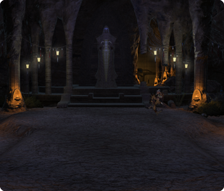

Taking it all apart.
The current Final Fantasy XIV UI lacks respsonsiveness and flexibility. While the user can move around it's elements, we cannot scale the UI or remove certain elements that for some may clutter the screen. However at launch some of these features will be implemented, including and not limited to scalability and the ability to turn off certain UI elements. Regarding how elements overlap each other though, nothing has been confirmed.

- 